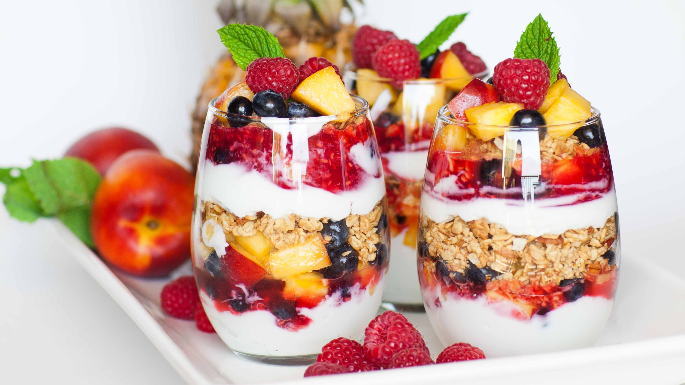

FRUIT And NUT YOGURT PARFAIT
prep time:
40min
yield:
2
ingredients
Yogurt 1 cups
Cinnamon Powder 1/2 tsp
Mango in small pieces 1/2 cups
Deseeded Watermelon in small pieces 1/2 cups
Lemon Slice 1 nos
Tutti Frooti 1 tsp
Chopped Almonds 1 tsp
Coconut Powder 1 tsp
Order Now
steps
First mix Cinnamon powder and sugar in yogurt nicely.
Now pour yogurt in serving glass and refrigerate for 1/2 an hour.
After 1/2 an hour put watermelon pieces on yogurt.
Now add mango pieces.
At last garnish wid tutti frooti and chopped almonds.
Now rub lemon slice on rim of the glass and rub coconut powder on it.
Serve chilled.